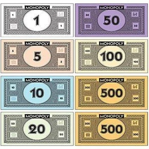
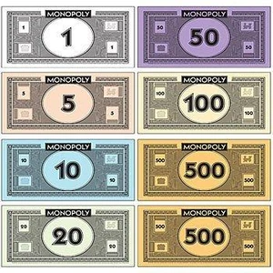

monopoly
Het doel van monopoly is een monopolie op te bouwen, wat spelers kunnen doen door zo veel mogelijk straten op te kopen. Iedere speler die in een straat verblijft, moet de eigenaar van die straat huur betalen. De straten zijn gegroepeerd in groepen (kleurgroepen) van drie (of twee) straten. In veel buitenlandse versies zijn het straten in de hoofdstad van het land, maar vaak ook zijn het straten in verschillende steden, wat de groepsindeling logischer maakt.
geschiedenis
Het spel monopoly (Engels voor monopolie) is een van de bestverkochte bordspellen ter wereld. Het is in 26 talen verkrijgbaar. Sinds 1935, het jaar dat het spel door Parker Brothers op de markt gebracht werd, zijn ruim 200 miljoen exemplaren verkocht. Ook verschijnen regelmatig bijzondere edities.
straten
De straten van het bordspel reflecteren iets van de landen waarin het verkocht wordt. De duurste straat op het Nederlandse bordspel is bijvoorbeeld de Kalverstraat, de bekendste winkelstraat in Amsterdam. Op het Belgische bordspel is dat de Nieuwstraat in Brussel.